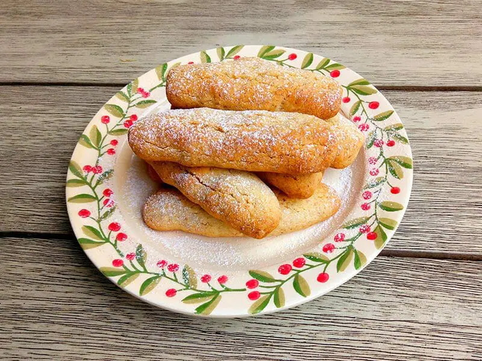
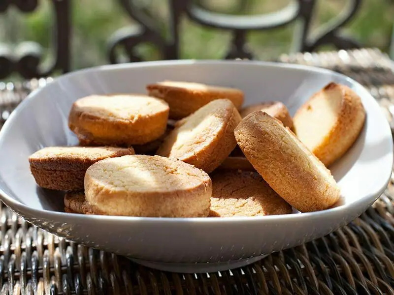
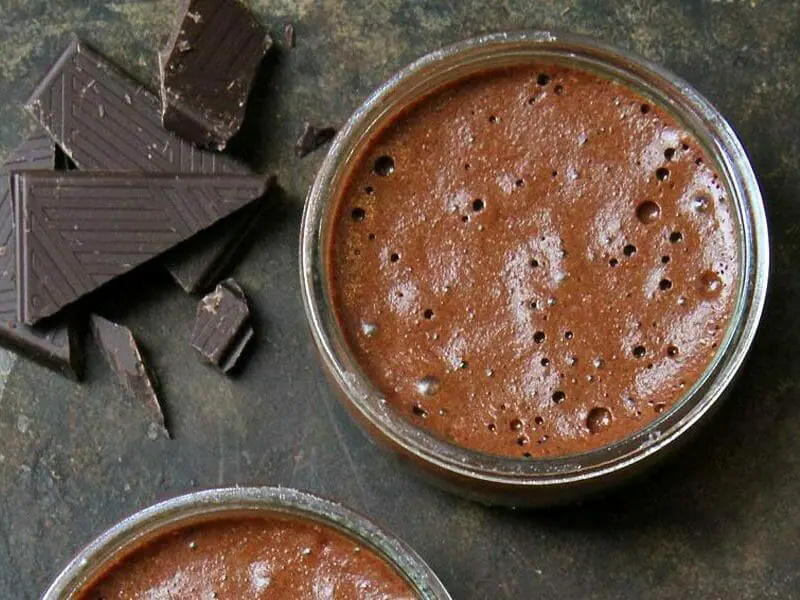

Les sucrés

Gateaux aux noix
- Préparation : 20 min
- Total : 35 min
- Difficulté : 32 portions
- Cout total : 2,46€
- Calorie par portion : 115 kcal
Ingredients
- 190gr de noix
- 150gr de beurre
- 90gr de sucre en poudre
- 250gr de farine T45 ou T55
- 1 oeufs
- 1 sachet sucre vanillé
Recette
- Mettre 190 grammes de noix (seulement les cerneaux) dans le robot et mélanger 15 sec/vitesse 5.
- Transvaser le contenu du robot dans un récipient puis réserver.
- Mettre 150 grammes de beurre mou coupés en morceaux dans le robot et mélanger 15 sec/vitesse 3.
- Ajouter 100 grammes de sucre en poudre dans le robot et mélanger 30 sec/vitesse 3.
- Ajouter 250 grammes de farine t45, 1 oeuf et 1 cuillère à soupe de rhum ambré ou de l' arôme vanille dans le robot.
- Ajouter les noix moulues dans le bol du Thermomix .
- Mélanger 30 sec/vitesse 3. Racler ensuite les parois du bol avec la spatule.
- Mélanger 20 sec/vitesse 3.
- Préchauffer le four à 180°C.
- Déposer la pâte sur le plan de travail puis former une boule, la pâte ne colle pas.
- Façonner des petits boudins de 25 grammes environ et les poser sur une plaque recouverte de papier cuisson .
- Inciser le dessus des biscuits.
- Mettre dans le four mode chaleur tournante pendant 13 min à 180°C.
- Ajuster le temps de cuisson de quelques minutes selon votre four. Les biscuits doivent être légèrement dorés.
- Laisser refroidir sur une grille.

Palets bretons au beurre salé
- Préparation : 10 min
- Total : 1 h 30 min
- Difficulté : 15 portions
- Cout total : 0,83€
- Calorie par portion : 97 kcal
Ingredients
- 140gr de farine
- 80gr sucre en poudre
- 0.5 sachet levure chimique
- 80gr beurre demi-sel
- 2 oeufs
- 1 c.s. eau
Recette
- Mettre 140 grammes de farine, 80 grammes de sucre en poudre, ½ sachet de levure chimique et 80 grammes de beurre demi-sel coupés en morceaux dans le robot. Donner 1 coup de Turbo programmé sur 2 sec.
- Ajouter 2 jaunes d'oeufs dans le robot et pétrir 1 min/programme Pétrissage en ajoutant 1 cuillère à soupe d'eau au bout de 15 secondes par l'orifice du couvercle du robot.
- Faire un boudin de 25 centimètres avec la pâte.
- Réserver au frigo, emballé dans un film plastique pendant 60 min.
- Préchauffer le four à 180°C.
- Découper des tranches de 1.5 à 2 cm de largeur dans le boudin. .
- Transvaser dans un moule à muffins huilé et mettre dans le four pendant 15 min à 180°C.
- Laisser refroidir avant de démouler et de les manger !

Mousse au chocolat
- Préparation : 15 min
- Total : 8 h 25 min
- Difficulté : 6 portions
- Cout total : 5,14€
- Calorie par portion : 381 kcal
Ingredients
- 7 oeufs
- 1 pincée de sel
- 50gr de sucre en poudre
- 300gr de chocolat noir
- 150gr de crème fraîche liquide
Recette
- Ajouter le fouet.
- Mettre 7 blancs d'oeufs et 1 pincée de sel dans le robot. Mélanger 6 min 30 sec/vitesse 3 sans le gobelet doseur en ajoutant 50 grammes de sucre en poudre en pluie et très progressivement pendant les 2 dernières minutes par l'orifice du couvercle du robot puis retirer le fouet.
- Transvaser dans un récipient puis réserver au frigo.
- Mettre 300 grammes de chocolat noir coupés en morceaux et 150 grammes de crème fraîche liquide dans le robot. Chauffer 4 min/60°C/vitesse 1.
- Ajouter les 3 jaunes d'oeufs dans le robot et mélanger 20 sec/vitesse 4.
- Mélanger très délicatement cette préparation avec les blancs en neige avec une spatule.
- Transvaser dans un saladier puis réserver au frigo pendant 08 h 00 min.